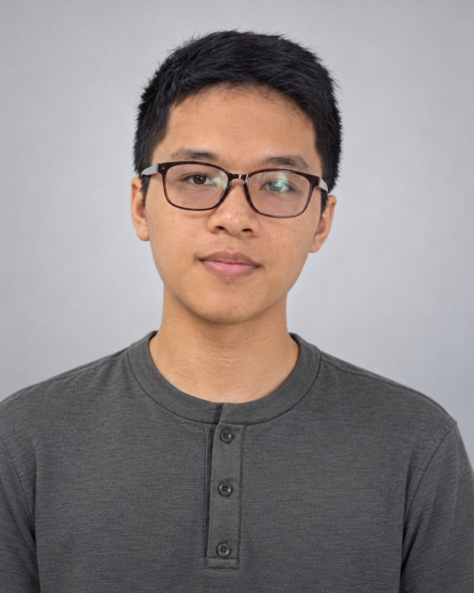
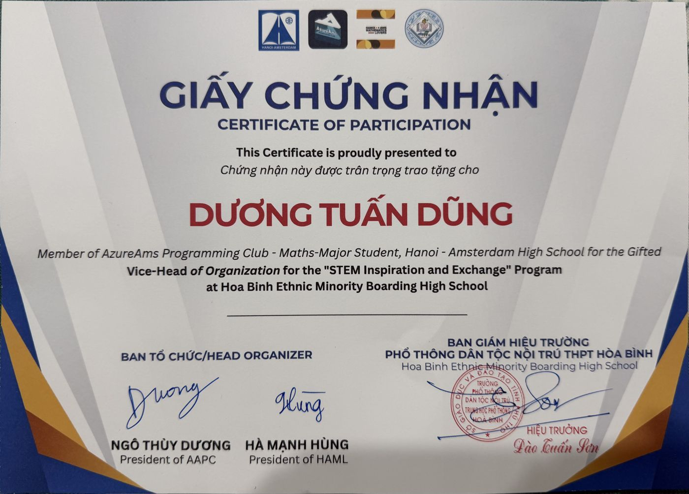
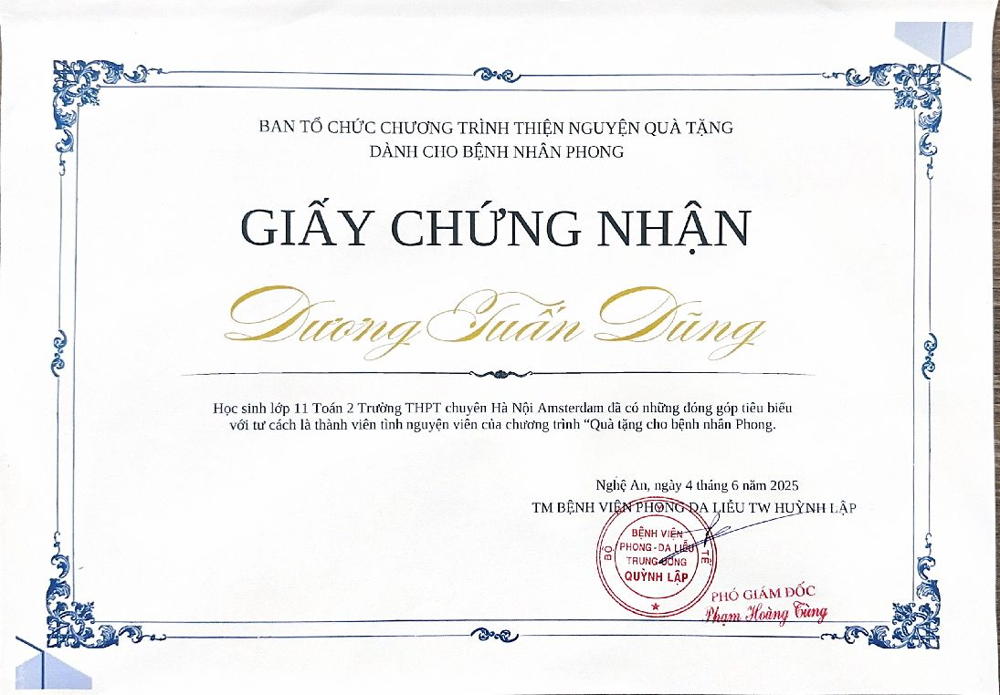
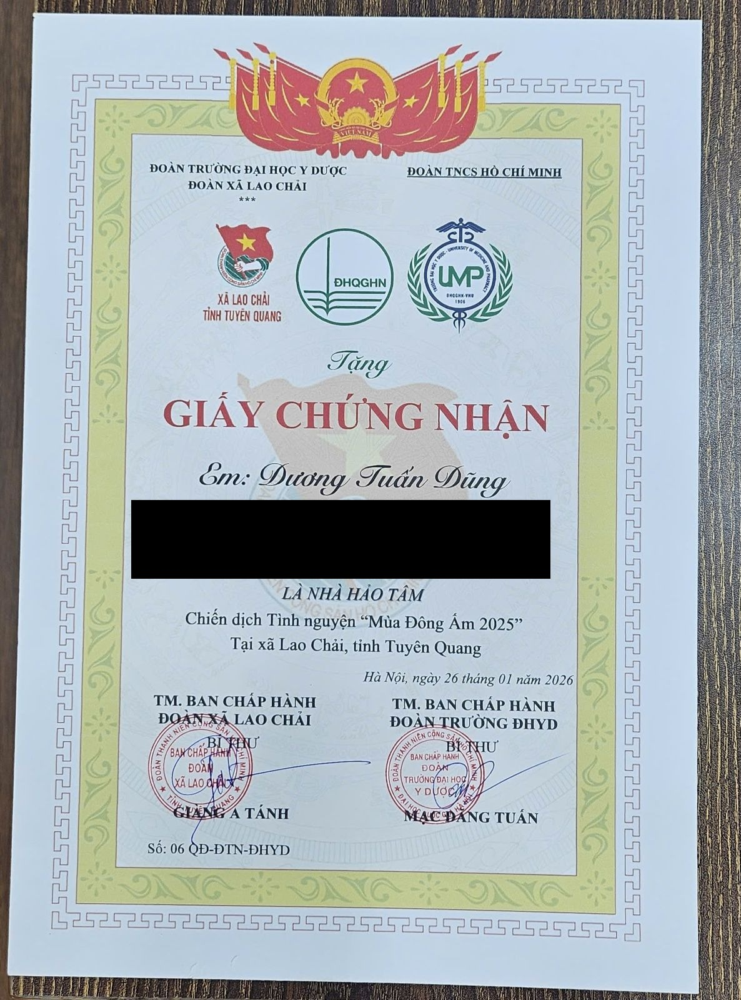
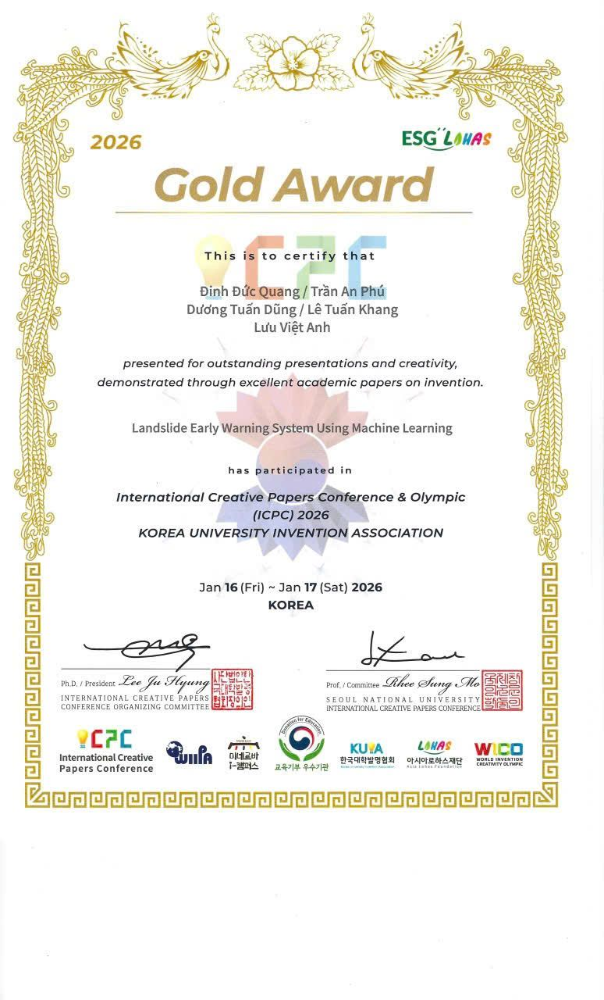

FOCUS / 01
Artificial intelligence with real-world purpose
My work explores how sensing, data and intelligent systems can respond to everyday challenges in cities and communities.
I turn mathematical thinking into practical systems — from machine-learning safety solutions to an IoT device that helps people care for plants.

A grade-12 student in the Math 2 track at Hanoi–Amsterdam High School for the Gifted, pursuing Computer Science and Electrical Engineering through research, prototyping and service.
My work explores how sensing, data and intelligent systems can respond to everyday challenges in cities and communities.
GPA 9.4 in grades 10 and 11; SAT 1540 with a perfect Math score; currently studying A-Level Mathematics and Computer Science.
Co-author of a 2026 IJMSM paper proposing sensor, RFID and computer-vision architecture for smarter parking in Hanoi.
Read publication ↗Designed and built around an ESP32, this personal project turns soil-moisture readings into a friendly visual interface so a beginner can understand a plant's condition at a glance.
Selected academic, innovation and competitive achievements from 2023 to 2026.
Landslide Early Warning System Using Machine Learning
ROV for Aquatic Integrity
Hanoi–Amsterdam · 2024–2025 and 2025–2026
Mathematics · 2025–2026 academic year
Competed in the grade-12 track while in grade 11
Grade 9 · Cau Giay Secondary School
Cau Giay District · Mathematics
8th Northern Vietnam Chess Championship
Leadership, service and hands-on work give context to the academic record.

Helped organize a STEM inspiration and exchange program for students at Hoa Binh Ethnic Minority Boarding High School.

Supported leprosy patients and wounded veterans in Nghe An, and joined a 2026 volunteer activity at Bach Mai Hospital.

Contributed to community support activities in northern Vietnam.

Teamwork across mathematics, engineering and presentation — from city contests to international innovation events.
Select an image to view the full certificate or activity record.
{kind=link}
{kind=link}
{kind=link}
{kind=link}
{kind=link}
{kind=link}
{kind=link}
{kind=link}
{kind=link}
{kind=link}
{kind=link}
{kind=link}